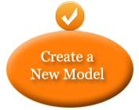
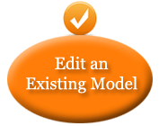

<#include "WEB-INF/templates/config/splot_config.ftl" />
Welcome to the Software Product Lines Online Tools Homepage
<#include "WEB-INF/templates/theme/${theme}/splot_header.ftl" /> <#include "WEB-INF/templates/theme/${theme}/splot_menu.ftl" />
Online Feature Model Editor
Please choose one of the following options:
 
<#include "WEB-INF/templates/theme/${theme}/splot_footer.ftl" /> <#include "WEB-INF/templates/theme/${theme}/splot_ga.ftl" />